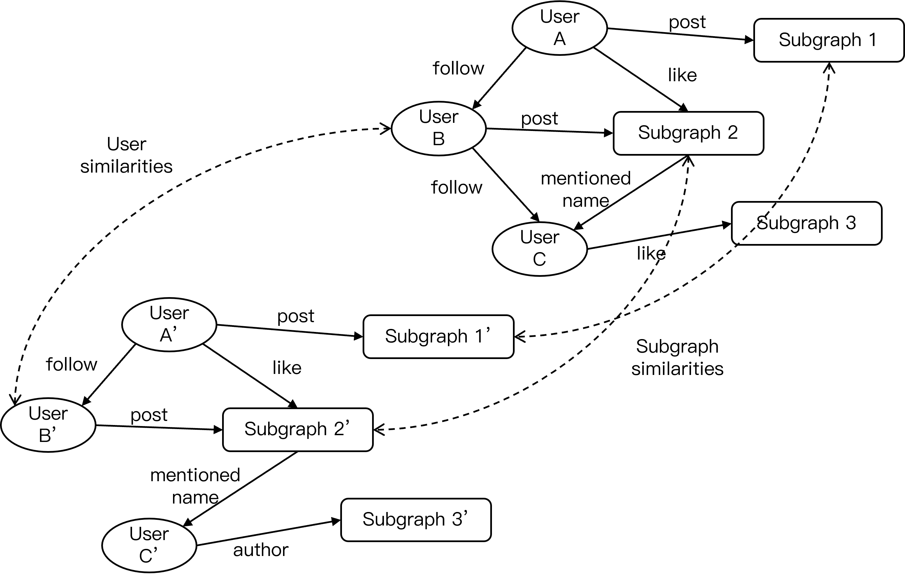
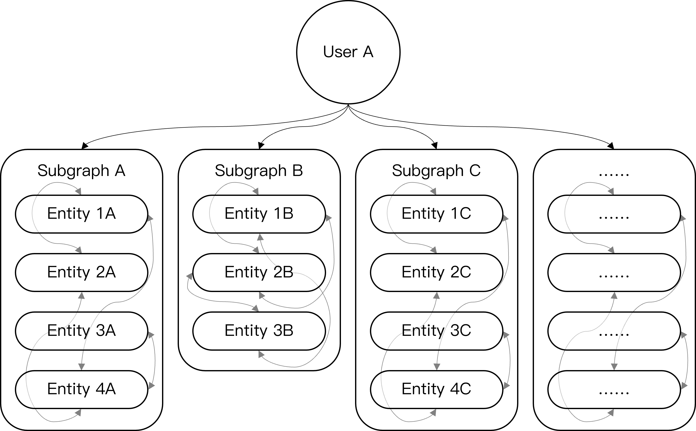
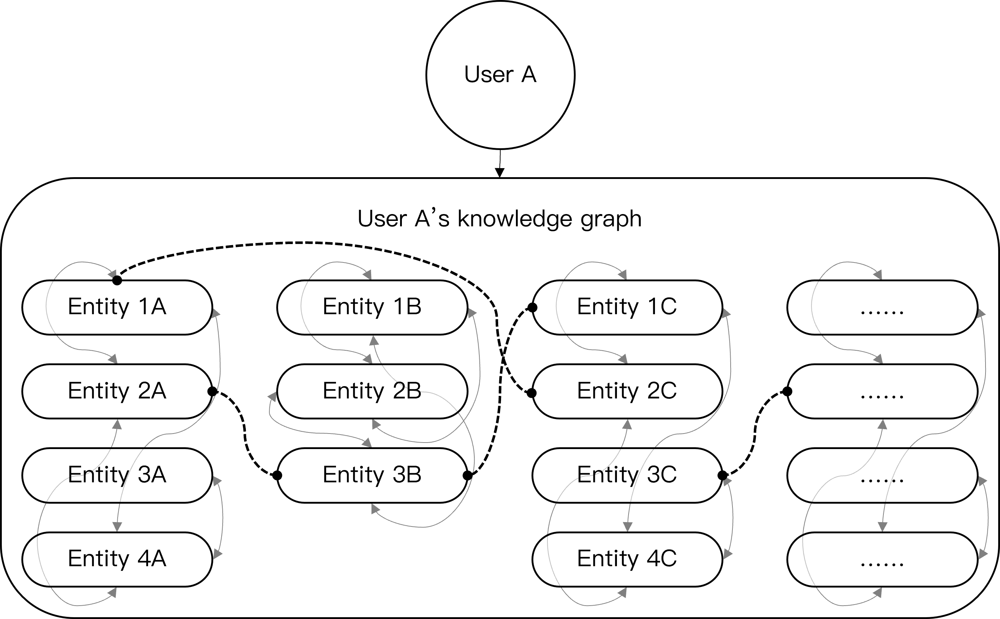
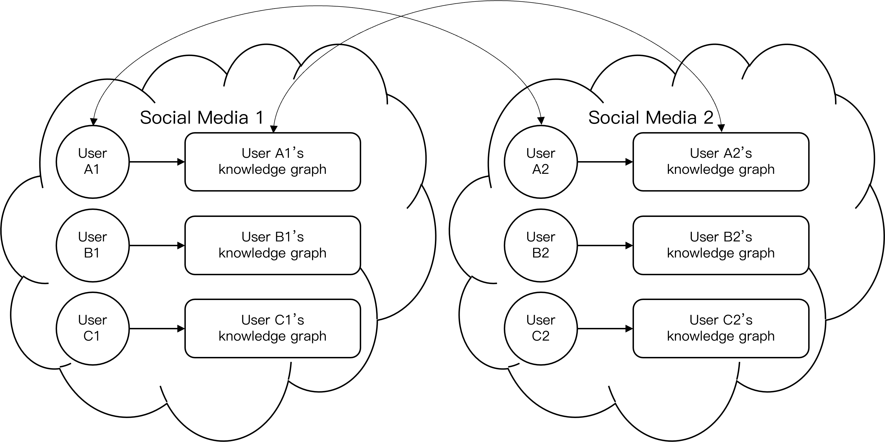
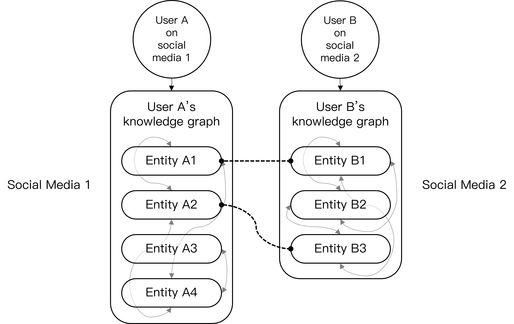
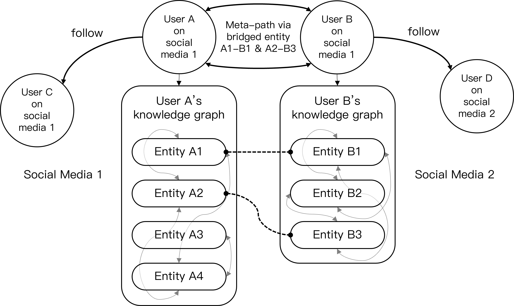

Lab Research: Data Mining in Social Networks
In this lab research, we developed our study on a project Linking the Users Across Multiple Social Networks Based on the Heterogeneous Media Data Mining.
Online social networks play an important role in people’s daily lives. People participate in multiple online social networks for different purposes, with research indicating that the average number of social media platforms in which a user takes part in is eight. In these different social media platforms, the heterogeneous user information, social content, and user relationships make up the heterogeneous media data, which are rich in information that could significantly improve the performance of various kinds of applications, including friend recommendation, spam group detection and information diffusion, etc. Previous outstanding works were proposed from the view of the user or group by considering only the feature of user profile and network topology, which is not enough to capture the potential user similarity pattern hidden beneath the user-generated contents, and could be easily attacked by malicious groups.
In order to tackle this challenge, we focus on the social media data mining to discover the user pattern across multiple heterogeneous networks. Our proposal is a joint learning model that consists of two major parts: the representation of User Fingerprints, i.e., an embedded knowledge graph mined from user-generated textual information, and the representation of Social Fingerprints, which indicates a social interaction graph of users based on both the similarity in their User Fingerprints and their behavioral relationships.
The User Fingerprint and Social Fingerprint information are fused and presented by one heterogeneous information network, in which the node with attribute denoting the entity (user or event) with its information, and the edge representing different kinds of dynamic relationship among the entities.

The User Fingerprint is mined using NLP related techniques such as named entity recognition (NER) and relationship extraction (RE), from the user-generated textual information, including user profiles and public contents on social media. This could be achieved by following the steps:



The User Fingerprint is not only useful in capturing the representation of user, but could also reveal the latent relationships between users. Under such assumption, we would go further by bridging different users’ personal knowledge graphs to generate meta-path between users via elements in their User Fingerprints.
Jointly considering the similarity of knowledge graph, user profile and network topology with the behavior actions between users, we could obtain the Social Fingerprint.


This improves the effectiveness of the heterogeneous graph immensely, since users in the same social network are connected not only through the interactions, but also contents; and users among different social networks are also connected with textual similarities, which would help greatly in aligning different networks.
After User Fingerprints and Social Fingerprints were generated, we could approach on constructing the heterogeneous graph of different social networks for alignment works. For the users as nodes, the joint representation of users from User Fingerprints can be captured using graph embedding and similar techniques. And for the relationships between nodes, both user-user links and user-content-user links as meta-paths are to be considered. On aligning different social networks, we consider the representation of users (nodes) and meta-paths (edges) jointly. The key to alignment is through the links across different networks, including manually specified identical user pairs and the connection through texts.
Preliminary experiments have already shown that our proposal has the ability to deal with the current issue faced by previous work, and to detect the similar users in heterogeneous networks effectively.